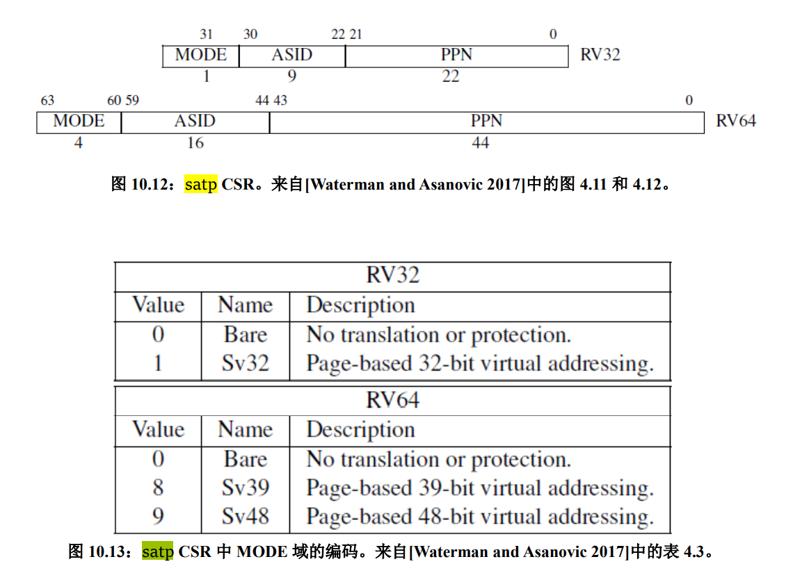

实验 4：RV64 用户模式
1. 实验目的
- 创建用户态进程，并设置
sstatus来完成内核态转换至用户态。 - 正确设置用户进程的用户态栈和内核态栈， 并在异常处理时正确切换。
- 补充异常处理逻辑，完成指定的系统调用（ SYS_WRITE, SYS_GETPID ）功能。
2. 实验环境
- 计算机系统Ⅱ中说明 wsl 的实验环境 ，如果采用别的环境（如docker），请向助教说明原因。
3. 背景知识
3.0 前言
在 lab3 中，我们开启虚拟内存，这为进程间地址空间相互隔离打下了基础。之前的实验中我们只创建了内核线程，他们共用了地址空间 （共用一个内核页表 swapper_pg_dir ）。在本次实验中我们将引入用户态进程。当启动用户模式应用程序时，内核将为该应用程序创建一个进程，为应用程序提供了专用虚拟地址空间等资源。因为应用程序的虚拟地址空间是私有的，所以一个应用程序无法更改属于另一个应用程序的数据。每个应用程序都是独立运行的，如果一个应用程序崩溃，其他应用程序和操作系统不会受到影响。同时，用户模式应用程序可访问的虚拟地址空间也受到限制，在用户模式下无法访问内核的虚拟地址，防止应用程序修改关键操作系统数据。当用户态程序需要访问关键资源的时候，可以通过系统调用来完成用户态程序与操作系统之间的互动。
3.1 User 模式基础介绍
处理器具有两种不同的模式：用户模式和内核模式。在内核模式下，执行代码对底层硬件具有完整且不受限制的访问权限，它可以执行任何 CPU 指令并引用任何内存地址。在用户模式下，执行代码无法直接访问硬件，必须委托给系统提供的接口才能访问硬件或内存。处理器根据处理器上运行的代码类型在两种模式之间切换。应用程序以用户模式运行，而核心操作系统组件以内核模式运行。
3.2 系统调用约定
系统调用是用户态应用程序请求内核服务的一种方式。在 RISC-V 中，我们使用 ecall 指令进行系统调用。当执行这条指令时处理器会提升特权模式，跳转到异常处理函数处理这条系统调用。
Linux 中 RISC-V 相关的系统调用可以在 include/uapi/asm-generic/unistd.h 中找到， syscall(2) 手册页上对RISC-V架构上的调用说明进行了总结，系统调用参数使用 a0 - a5 ，系统调用号使用 a7 ， 系统调用的返回值会被保存到 a0, a1 中。
3.3 sstatus[SUM] PTE[U]
当页表项 PTE[U] 置 0 时，该页表项对应的内存页为内核页，运行在 U-Mode 下的代码无法访问。当页表项 PTE[U] 置 1 时，该页表项对应的内存页为用户页，运行在 S-Mode 下的代码无法访问。如果想让 S 特权级下的程序能够访问用户页，需要对 sstatus[SUM] 位置 1 。但是无论什么样的情况下，用户页中的指令对于 S-Mode 而言都是无法执行的。
3.4 用户态栈与内核态栈
当用户态程序在用户态运行时，其使用的栈为用户态栈，当调用 SYSCALL时候，陷入内核处理时使用的栈为内核态栈，因此需要区分用户态栈和内核态栈，并在异常处理的过程中需要对栈进行切换。
4. 实验步骤
4.1 准备工程
- 此次实验基于 lab3 同学所实现的代码进行。
- 需要修改
vmlinux.lds，将用户态程序uapp加载至.data段。按如下修改，其余部分保持不变：1 2 3 4 5 6 7 8 9 10 11 12 13 14 15 16 17 18 19
... .data : ALIGN(0x1000){ _sdata = .; *(.sdata .sdata*) *(.data .data.*) _edata = .; . = ALIGN(0x1000); uapp_start = .; *(.uapp .uapp*) uapp_end = .; . = ALIGN(0x1000); } >ramv AT>ram ... - 需要修改
defs.h，在defs.h添加如下内容：1 2
#define USER_START (0x0000000000000000) // user space start virtual address #define USER_END (0x0000004000000000) // user space end virtual address - 从
repo同步以下文件夹:user，Makefile，并按照以下文件结构将这些文件正确放置。其中，用新的Makefile替换原本对应位置的Makefile，新的Makefile将user文件夹内编译出的uapp.o列入LD链接对象中。1 2 3 4 5 6 7 8 9 10 11 12 13 14
. ├── arch │ └── riscv │ └── Makefile └── user ├── Makefile ├── getpid.c ├── link.lds ├── printf.c ├── start.S ├── stddef.h ├── stdio.h ├── syscall.h └── uapp.S - 修改根目录下的
Makefile，将user纳入工程管理，在适当位置添加如下内容：
1 2 | |
- 在根目录下
make会生成user/uapp.o,user/uapp.elf,user/uapp.bin。通过objdump我们可以看到 uapp 使用 ecall 来调用 SYSCALL (在 U-Mode 下使用 ecall 会触发environment-call-from-U-mode异常)。从而将控制权交给处在 S-Mode 的 OS， 由内核来处理相关异常。
1 2 3 4 5 6 7 8 9 10 11 12 13 14 15 16 | |
4.2 创建用户态进程
- 本次实验只需要创建 3 个用户态进程，
proc.h中的NR_TASKS为4。 - 由于创建用户态进程要对
sepc,sstatus,sscratch做设置，我们将其加入thread_struct中。- sepc：保存特权态中断处理完毕后sret的返回地址。
- sstatus：控制信号，控制当前是否中断。
- sscratch：保存另一个状态的 sp，用于在切换状态时更新sp。
- 由于多个用户态进程需要保证相对隔离，因此不可以共用页表。我们为每个用户态进程都创建一个页表。修改
task_struct如下。1 2 3 4 5 6 7 8 9 10 11 12 13 14 15 16 17 18 19 20 21 22 23
// proc.h typedef unsigned long* pagetable_t; struct thread_struct { uint64 ra; uint64 sp; uint64 s[12]; uint64 sepc, sstatus, sscratch; }; struct task_struct { struct thread_info* thread_info; uint64 state; uint64 counter; uint64 priority; uint64 pid; struct thread_struct thread; pagetable_t pgd; }; - 修改 task_init
- 对每个用户态进程，其拥有两个 stack：
U-Mode Stack以及S-Mode Stack， 其中S-Mode Stack在系统二实验六中我们已经设置好了。我们可以通过kalloc接口申请一个空的页面来作为U-Mode Stack（需要区分好U-Mode Stack在kalloc时的地址 / 在用户态下的地址 / 真实物理地址 之间的区别，kalloc函数返回的所有地址都为虚拟地址，见下图）。 - 为每个用户态进程创建自己的页表。首先，通过
kalloc申请一个空的页面来做页表，并将页表的物理地址写入task_struct中（因为在进程切换的时候会直接将数值写入satp）。为了避免U-Mode和S-Mode切换的时候切换页表，我们将内核页表 （swapper_pg_dir） 复制到每个进程的页表中（这时可以直接在虚拟地址的空间上赋值，为什么？请在思考题中回答）。 - 将
uapp（用户态运行程序）、以及U-Mode Stack在每个用户态进程新建立的页表里做相应的映射。- uapp函数的起始地址在vmlinux.lds定义过，可以通过和lab3类似的地址引用的方式获得
- 对每个用户态进程我们需要将
sepc修改为USER_START； 设置sstatus中的SPP（ 使得 sret 返回至 U-Mode ），SPIE（ sret 之后开启中断 ），SUM（ S-Mode 可以访问 User 页面 ）；sscratch设置为U-Mode的 sp，其值为USER_END（即U-Mode Stack被放置在user space的最后一个页面）。
- 对每个用户态进程，其拥有两个 stack：
1 2 3 4 5 6 7 8 9 10 11 12 13 14 15 16 17 18 19 20 | |
-
修改 __switch_to， 需要加入 保存/恢复
sepc,sstatus,sscratch以及切换页表的逻辑。（注意和thread_struct中定义的顺序一致） -
satp寄存器用于保存根页表的物理地址(PPN)，它以 4 KiB 的页面大小为单位。我们采用的是RV64的Sv39虚拟地址分页模式，因此需要在切换进程时，需要将进程的页表的PPN和MODE同时写入satp寄存器中。

4.3 修改中断入口/返回逻辑 ( _trap ) 以及中断处理函数 （ trap_handler ）
-
与 ARM 架构不同的是，RISC-V 中只有一个栈指针寄存器( sp )，因此需要我们来完成用户栈与内核栈的切换。
-
由于我们的用户态进程运行在
U-Mode下， 使用的运行栈也是U-Mode Stack， 因此当触发异常时， 我们首先要对栈进行切换 （U-Mode Stack->S-Mode Stack）。同理，当我们完成了异常处理， 从S-Mode返回至U-Mode， 也需要进行栈切换 （S-Mode Stack->U-Mode Stack）。 -
修改
__dummy。在 4.2 中 我们初始化时，thread_struct.sp保存了S-Mode sp，thread_struct.sscratch保存了U-Mode sp， 因此在用户线程一开始被调度时（一开始用户线程会从__dummy开始运行，此时处于S-Mode，sret后会进入U-Mode），我们只需要从sscratch中读取U-Mode sp，将当前sp寄存器（即S-Mode sp）写入sscratch，将U-Mode sp放入当前sp寄存器，这样在sret进入U-Mode时，使用的就会是U-Mode Stack。 这里还需要修改进入U-Mode的地址为0地址，即为用户虚拟空间下代码段的起始地址。 -
修改
_traps。同理在_traps的首尾我们都需要做类似上一步的操作。注意如果是 内核线程( 没有 U-Mode Stack ) 触发了异常，则不需要进行切换。需要在_trap的首尾都对此情况进行判断。（内核线程的 sp 永远指向的 S-Mode Stack， sscratch 为 0） -
uapp使用ecall会产生ECALL_FROM_U_MODEexception。因此我们需要在trap_handler里面进行捕获。修改trap_handler如下：这里需要解释新增加的第三个参数1 2 3
void trap_handler(uint64 scause, uint64 sepc, struct pt_regs *regs) { ... }regs， 在_traps中我们将寄存器的内容连续的保存在S-Mode Stack上， 因此我们可以将这一段看做一个叫做pt_regs的结构体。我们可以从这个结构体中取到相应的寄存器的值（ 比如 syscall 中我们需要从 a0 ~ a7 寄存器中取到参数 ）。 示例如下图（下图只是一个示例，同学们可以根据自己实现的寄存器与sepc的存储方式定义pt_regs结构体）：请同学们根据自己在1 2 3 4 5 6 7 8 9 10 11 12 13 14 15 16 17 18 19 20 21 22 23
High Addr ───► ┌─────────────┐ │ sepc │ │ │ │ x31 │ │ │ │ . │ │ . │ │ . │ │ │ │ x1 │ │ │ │ x0 │ sp (pt_regs) ──► ├─────────────┤ │ │ │ │ │ │ │ │ │ │ │ │ │ │ │ │ │ │ Low Addr ───► └─────────────┘_traps中实现的栈存储模式补充struct pt_regs的定义（可以在新增加的syscall.h文件中定义，见 4.4）， 以及在trap_hanlder中补充处理 SYSCALL 的逻辑。
4.4 添加系统调用
-
本次实验要求的系统调用函数原型以及具体功能如下：
- 64 号系统调用
sys_write(unsigned int fd, const char* buf, size_t count)该调用将用户态传递的字符串打印到屏幕上，此处fd为标准输出（1），buf为用户需要打印的起始地址，count为字符串长度，返回打印的字符数。( 具体见 user/printf.c ) - 172 号系统调用
sys_getpid()该调用从current中获取当前的pid放入a0中返回，无参数。（ 具体见 user/getpid.c ）
- 64 号系统调用
-
增加
syscall.c,syscall.h文件， 并在其中实现getpid以及write逻辑。 - 系统调用的返回参数放置在
a0中，注意不可以直接修改寄存器， 应该修改参数regs中保存的内容。（为什么？请在思考题中回答） - 针对系统调用这一类异常， 我们需要手动将
sepc + 4。（为什么？请在思考题中回答）
4.5 修改 head.S 以及 start_kernel
- 之前 lab 中， 在 OS boot 之后，我们需要等待一个时间片，才会进行调度。我们现在更改为 OS boot 完成之后立即调度 uapp 运行，即设置好第一次时钟中断后，在
main()中直接调用schedule()。 - 在 start_kernel 中调用
schedule()注意放置在test()之前。 - 将 head.S 中 enable interrupt sstatus.SIE 逻辑注释，确保 schedule 过程不受中断影响。（为什么？请在思考题中回答）
4.6 编译及测试
- 由于加入了一些新的 .c 文件，可能需要修改一些Makefile文件，请同学自己尝试修改，使项目可以编译并运行。
- 输出示例
1 2 3 4 5 6 7 8 9 10 11 12 13 14 15 16 17 18 19 20 21 22 23 24 25 26 27 28
OpenSBI v0.5 (Oct 9 2019 12:03:04) ____ _____ ____ _____ / __ \ / ____| _ \_ _| | | | |_ __ ___ _ __ | (___ | |_) || | | | | | '_ \ / _ \ '_ \ \___ \| _ < | | | |__| | |_) | __/ | | |____) | |_) || |_ \____/| .__/ \___|_| |_|_____/|____/_____| | | |_| Platform Name : QEMU Virt Machine Platform HART Features : RV64ACDFIMSU Platform Max HARTs : 8 Current Hart : 0 Firmware Base : 0x80000000 Firmware Size : 116 KB Runtime SBI Version : 0.2 PMP0: 0x0000000080000000-0x000000008001ffff (A) PMP1: 0x0000000000000000-0xffffffffffffffff (A,R,W,X) ...mm_init done! [INIT] ...proc_init called! [INIT] ...proc_init done! [INIT] ...set_priority done! ZJU Computer System III [U-MODE] pid: 1, sp is 0000003fffffffe0 [U-MODE] pid: 2, sp is 0000003fffffffe0 [U-MODE] pid: 3, sp is 0000003fffffffe0
5. 思考题
结合具体实现，请回答在 4.2, 4.4, 4.5 两个小节中出现的 4 道思考题，
6. 作业提交
同学需要提交实验报告以及整个工程代码。在提交前请使用 make clean 清除所有构建产物。